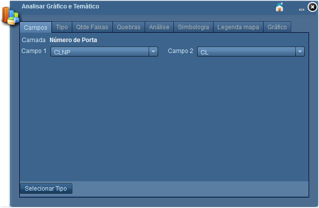
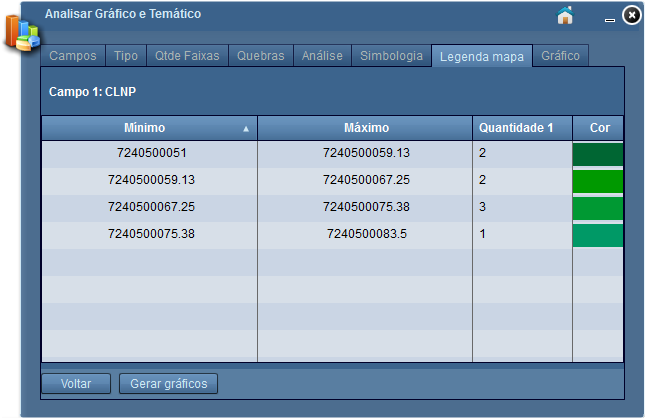

Analisar Gráfico e Temático
Possibilita criar mapa temático e gerar gráficos, a partir de amostras provenientes de pesquisas realizadas sobre o mapa.

Configurações referentes a aba "Campos".
Camada: exibe o nome da camada em análise;
Campo 1: define primeiro campo para análise;
Campo 2: define segundo campo para análise;
Selecionar Tipo: habilita aba "Tipo".
Configurações referentes a aba "Tipo"
Camada: exibe a camada em análise;
Campo 1: exibe primeiro campo em análise;
Campo 2: exibe segundo campo em análise;
Tipo do Gráfico: define tipo de gráfico a ser construído. Possui os seguintes tipos:
Analisar dados: habilita aba "Análise". Este controle será visível caso o tipo de gráfico seja valor único;
Selecionar Qtde de Faixas: habilita aba "Qtde. Faixa". Este controle será visível se, tipo de gráfico for igual á "Faixa de Valor" ou "Faixa de Valor - 2 Campos".
Configurações referentes a aba "Qtde. Faixa".
Quantidade de Faixas: define número de faixas. Por padrão a quantidade de faixas é iniciada em 4 (quatro);
Listagem: exibe valores de acordo com a quantidade de faixa definida;
Selecionar Quebras: habilita aba "Quebras".
Configurações referentes a aba "Quebras".
Listagem: exibe listagem de faixas definidas e possibilita definir quebras editando as faixas;
Analisar Dados: habilita aba "Análise".
Configurações referentes a aba "Análise".
Listagem: exibe os valores, e a quantidade de cada valor ou faixa;
Gerar Mapa Temático: habilita aba "Simbologia".
Configurações referentes a aba "Simbologia".
Cores: define cores para tematização no mapa;
Listagem: exibe a descrição dos valores associados à sua respectiva cor na tematização. A cor pode ser alterada individualmente para cada valor representado na listagem;
Aplicar Tematização: habilita aba "Legenda mapa", e aplica a tematização sobre o mapa.

Configurações referentes a aba "Legenda mapa".
Listagem: exibe a legenda para mapa temático;
Gerar Gráficos: habilita aba "Gerar gráficos", e gera o gráfico baseado nos valores da listagem do "Analisar Gráfico e Temático".
Configurações referentes a aba "Gráfico".
Exportar Gráfico: salva gráfico selecionado no formato de imagem;
Gráfico de Colunas: gera gráfico de colunas;
Gráfico de Pizza: gera gráfico de pizza.
Para retornar à aba anterior basta clicar sobre o botão  , visualizado a partir da aba "Tipo".
, visualizado a partir da aba "Tipo".
para retornar ao início basta clicar sobre o símbolo "Início" no topo da ferramenta.